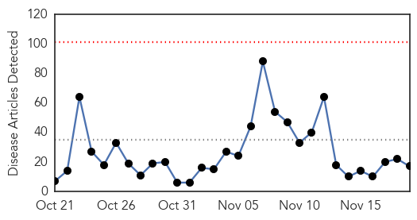
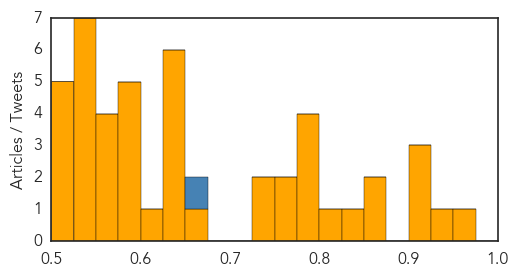

Ebola
30-Day Web Trend
0 alerts, 0 warnings

30-Day Twitter Trend
28 alerts, 2 warnings

Article Locations

Article Confidences

Top Articles:
- 0.999
- Last Known Ebola Case in Guinea Recovers from the Virus
- 0.999
- 2015, Behind the News
- 0.999
- UN Ebola chief says priority now is helping 15,000 survivors
- 0.997
- UN Ebola chief: Priority now is helping 15,000 survivors
- 0.997
- UN Ebola chief says priority now is helping 15 000 survivors
- 0.996
- UN Ebola chief says priority now is helping 15,000 survivors
- 0.996
- UN Ebola chief says priority now is helping 15 000 survivors
- 0.994
- University at heart of Ebola battle badly hit by deaths
- 0.991
- Guinea begins countdown to being Ebola-free
- 0.991
- Soon To Be Declared Ebola Free.
- 0.958
- Building Defences Against Future Ebola Outbreaks
- 0.868
- Chief Medical Officer Expresses MOHS Readiness to improve Status of Emergency Obstetric and Newborn Care in Sierra Leone.
- 0.777
- EU Parliamentary Team told of Ebola effect in Lunsar
- 0.679
- Chief Medical Officer Expresses MOHS Readiness to improve Status of Emergency Obstetric and Newborn Care in Sierra Leone
- 0.663
- Meet the Ugandan Scientist Who Developed the Rapid Ebola Test
- 0.609
- Over 250 midwives honored in Bong
- 0.528
- Texas Children's Hospital isolation unit opens to contain contagious diseases
Top Tweets:
- 0.984
- Ebola outbreak in West Africa 23 months on: Sierra Leone university students' views on the crisis - https://t.co/IM4oKFPi1t ebola
- 0.981
- Matenda a Ebola Akuyembekezeka Kutha Mdziko la GuineaMatenda a Ebola Akuyembekezeka ... - https://t.co/NtM3QeOUap ebola
- 0.977
- Last patient with Ebola recovers in Guinea now with no cases of the disease - https://t.co/yi5bN50eKs ebola
- 0.970
- Potential impact of sexual transmission of Ebola virus on the epidemic in West Africa - https://t.co/kCxyMElRao ebola
- 0.960
- - Ebola outbreak in West Africa “is not completely over” Navarro - https://t.co/6hj6ra6lyG ebola
- 0.949
- Health: Last Ebola Patient Released from Treatment Center - https://t.co/01rZB9Gb6O ebola
- 0.944
- Ebola: Can't say this often enough. The world owes a huge debt to the health professionals & response workers who battled Ebola. myheroes
- 0.934
- Guinea: last known patient of Ebola - https://t.co/W8i8QDIE8J ebola
- 0.931
- Guinea: Last Ebola patient tests negative - https://t.co/TLwlqwHUDf ebola
- 0.930
- Gamma interferon protects mice from Ebola virus - https://t.co/eW1fBUY02L ebola
- 0.928
- News in the Humanosphere: No known cases of Ebola in Africa - https://t.co/p9JwupOIuw ebola
- 0.903
- Ebola Vaccine Shows Positive Human Immune Response - https://t.co/olSFLKptLU ebola
- 0.898
- Ebola outbreak in West Africa has resulted in more Ebola survivors than ever before: https://t.co/tzHuMxl5zj
- 0.885
- Last Known Ebola Patient Cured In Guinea - https://t.co/J2pfZwlV2E ebola
- 0.878
- Speaker to discuss Ebola influenza and future pandemics - https://t.co/7ytn0QturW ebola
- 0.876
- Last known Ebola case in Guinea recovers - https://t.co/ukq4op4lmy ebola
- 0.873
- RT: @chrislhayes do the syrins have the ebola?!?
- 0.868
- ebola anarchist e-juice - https://t.co/yyDrXrPdEE ebola
- 0.866
- Hewlett Foundation Grant Summary | Ebola Epidemic Response - https://t.co/0SNQKmUOOa ebola
- 0.848
- Guinea Begins Countdown To Ebola End - Celebrating Progress Africa https://t.co/eBvDS2vFcL ebola EVD
- 0.847
- Tallaght hospital in lockdown following Ebola scare - https://t.co/2BsF7TEnLs ebola
- 0.834
- Traditional healers change leaf after Ebola - https://t.co/s8h0ssmfKS ebola
- 0.832
- Guinea Begins Countdown To Ebola End - https://t.co/EPrem1Pz8h ebola
- 0.824
- New Ebola Vaccine Safe Stimulates Strong Immune Response - NDTV https://t.co/qOlJtDlMBb ebola EVD
- 0.824
- New Ebola Vaccine Safe Stimulates Strong Immune Response - NDTV https://t.co/SJ7rYbRngg ebola EVD
- 0.810
- Sierra Leone: World Bank Provides US126 Million for Post-Ebola Recovery - https://t.co/SZZXevxj97 ebola
- 0.805
- Studies show Ebola RNA stable in blood promise for filovirus vaccine - CIDRAP https://t.co/NXuIF1CI3T ebola EVD
- 0.804
- New Ebola vaccine safe stimulates strong immune response - Zee News https://t.co/qR8UtS75HX ebola EVD
- 0.795
- New Ebola Vaccine strengthens Immune Response: Study - https://t.co/69tDGvrJsh ebola
- 0.794
- Alleyesonguniea as they countdown to Zero Ebola cases.africaagainstebola
- 0.792
- Prioritising psychosocial support for people affected by Ebola... - https://t.co/KUKG892rba ebola
- 0.791
- French speaker +behavioral scientist +health communicator = perfect candidate for Ebola outbreak response in Guinea https://t.co/4Uqnzx40F6
- 0.786
- New Ebola vaccine safe stimulates strong immune response - https://t.co/Wubn9eYxen ebola
- 0.785
- UN Ebola envoy: Survivors are "priority number one" - https://t.co/93bBkH7z0K ebola
- 0.784
- Studies show Ebola RNA stable in blood promise for filovirus vaccine - https://t.co/1rMEMuT4gH ebola
- 0.753
- Support for Ebola survivors 'priority' says UN envoy - https://t.co/tMolPyjncv ebola
- 0.752
- Going home to face Ebola - https://t.co/2eT3JGhrhB ebola
- 0.740
- Future epidemic trials must cut through red tape says Ebola researcher - https://t.co/04J67qs1yA ebola
- 0.739
- University at heart of Ebola battle badly hit by deaths - University World News https://t.co/oP566LCHvO ebola EVD
- 0.736
- University at heart of Ebola battle badly hit by deaths - https://t.co/pft84j3Vnw ebola
- 0.735
- Ensuring 15000 survivors of Ebola have support they need is first priority: UN envoy - https://t.co/zhhUxxTpkR ebola
- 0.733
- Queen gives lunch for Ebola doctor - https://t.co/zEJ97ipYDy ebola
- 0.728
- Continue Ebola Survivors' Project Unicef Urged - https://t.co/ynyan6Jfs0 ebola
- 0.712
- UN Ebola chief says priority now is helping 15000 survivors - https://t.co/S7dO0vT5W1 ebola
- 0.712
- UN Ebola Chief Says Priority Now Is Helping 15000 Survivors - https://t.co/nXhRBbW3U3 ebola
- 0.667
- It's really looks like the West African Ebola outbreak is over. No new cases in Guinea & no contacts being followed https://t.co/194UYCd92C
- 0.663
- The last known Ebola case in Guinea a three week old girl has... Stock Footage Video - https://t.co/Tlq0P5Y4C3 ebola
- 0.661
- UN Ebola Chief Says Priority Now Is Helping 15000 Survivors - ABC News https://t.co/AH5wzUGzj1 ebola EVD
- 0.656
- University of Maryland's Ebola vaccine declared safe and effective - https://t.co/sRL3dOmxKQ ebola
- 0.632
- What The US Refugee Panic Shares With The Ebola Panic - Forbes https://t.co/r8RT6qM7KJ ebola EVD
Showing top 50 tweets...
Unknown
30-Day Web Trend
1 alerts, 0 warnings

30-Day Twitter Trend
0 alerts, 0 warnings

Article Locations

Article Confidences
Top Articles:
- 0.973
- Zika Virus Feared To Cause Newborn Deformities Spreads In South America And The Caribbean
- 0.930
- CDC Update: Chipotle-Linked E. Coli Outbreak Case Count Now At 45
- 0.917
- Nassau County To Kick Off No-Cost Flu Vaccines Drive To Prevent Illness During The Holiday Season
- 0.902
- New Resistant Superbug Spreading
- 0.901
- Here is everything you need to know about Human Papilloma Virus
- 0.871
- Looking for Winter Cold and Flu Remedies? Indian Food Can Be The Solution
- 0.857
- Study Finds New STD, CDC Sees Rise in Diseases Being Transmitted
- 0.850
- Portiuncula revamp will help tackle Galway hospital crisis
- 0.809
- Mobile options now available for flu prevention - azfamily.com 3TV
- 0.787
- Chipotle re-opens restaurants as outbreak investigation continues
- 0.784
- STD rates rise, especially among men
- 0.784
- STD rates rise, especially among men
- 0.776
- News from Delaware State Government Agencies
- 0.764
- ‘HIV viral load can be undetectable’
- 0.755
- South Sudan: MSF sees dramatic increase of patients in Malakal's UN site as living conditions jeopardise health of thousands
- 0.731
- Dallas County offering free flu shots for uninsured - Story
- 0.726
- The Level of STD Cases in Country Has Now Reached Epidemic Proportions
- 0.672
- African Researchers promises to end neglected diseases
- 0.647
- AIDS claims 302 lives; nearly 4500 infected in J&K
- 0.645
- ‘World powers betrayed the spirit of Nuremburg’
- 0.645
- Fears of French-style Patriot Act in wake of Paris attacks
- 0.645
- Fate of suspected Paris attacks 'architect' unknown
- 0.642
- American teenager among victims of deadly West Bank attacks
- 0.640
- Dangerous Bacteria in Oysters and Raw Fish Has Killed 13 People and Sickened 42 More
- 0.613
- Over 3 million risk kidney disease globally
- 0.597
- One day only: Uber to roll out, deliver flu shots today
- 0.597
- Uber delivering flu shots Thursday
- 0.597
- 2nd person says Yellowknife hospital failed to treat lung infection
- 0.594
- Utica schools, health leaders warn parents of TB case
- 0.585
- Health Officials Concerned About More Cases of Syphilis In Oregon
- 0.559
- Vision loss at Washim camp: NHRC seeks report on cataract surgeries
- 0.553
- Bird flu sparks culling fears, Business, Phnom Penh Post
- 0.550
- Poor sanitation puts millions of children at risk of disease: UNICEF
- 0.550
- Science Says Super Bacteria Coming to Kill Us Is Imminent, "People Will Die"
- 0.545
- Media Release: Health providers take to the streets for paid sick days on November 19
- 0.538
- Le PTCI – que prévoit-il pour les partenaires sociaux? Le CESE a annoncé un dialogue constructif avec les partenaires sociaux
- 0.538
- Health and safety precautions for power outages and floods
- 0.536
- Scientists warn that superbugs discovered in China are resistant to antibiotics
- 0.531
- Storm brews in Hlotse as town goes three months without portable water
- 0.529
- MSF Treats 60 People Wounded in Grenade Explosions
- 0.526
- Nation Home
- 0.524
- Malaria Parasite P. Vivax (Plasmodium vivax)
- 0.514
- Utica High School student has tuberculosis, officials working to identify those who had contact
- 0.505
- Utica High School student tests positive for tuberculosis
- 0.505
- Superbugs 'are now resistant to ALL drugs and antibiotic defences'
- 0.501
- WHO issues warning over Ethiopia climate change risks
Top Tweets:
- 0.661
- RT: haiti fraudes électorales-Un sondage de sortie des urnes met en doute les résultats préliminaires officiels https://t.c…